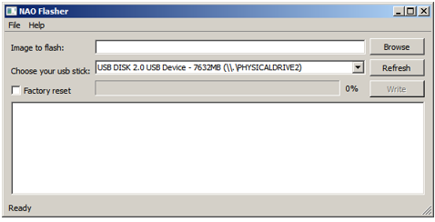
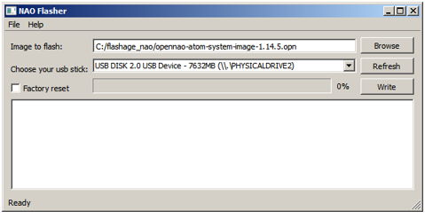
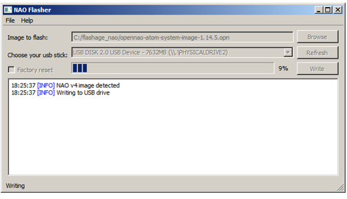
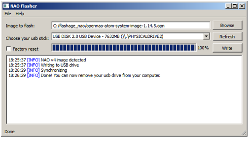
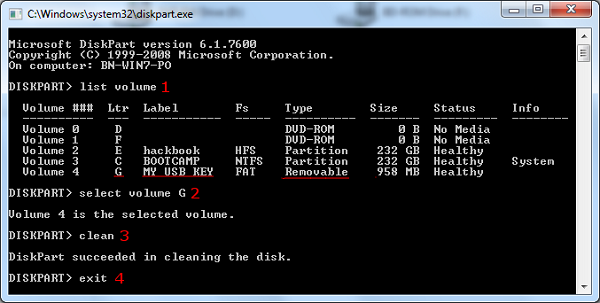

Upgrading using NAOFlasher¶
Before starting¶
Then:
| Step | Action |
|---|---|
Get a USB stick:
If necessary, see: Reusing a formatted USB stick. |
|
Get a NAOFlasher according to the Operating System of your computer:
You can download the latest release from SoftBank Robotics Community website. For further details, see: Downloading & Installing SoftBank Robotics Software. |
|
Get the NAO system image.
You can download the latest release from SoftBank Robotics Community website. For further details, see: Downloading & Installing SoftBank Robotics Software. |
|
Factory reset option: if you plan to ask a Factory reset, get an Ethernet cable, and make sure you have all relevant information to restore the WiFi connection settings afterward. For further details, see: Setting NAO’s WiFi connection. |
I - Writing the image on the USB stick¶
| Step | Action |
|---|---|
Insert your USB stick in your computer. Note On Windows and Mac OS X, you might encounter a prompt telling you that the USB drive you inserted is not readable, and that you should format it. Please ignore this and click the Cancel button or similar. |
|
Launch the flasher executable. It should look roughly like this: Note On Linux and Mac OS X, the program may require sudo privileges. |
|
Choose File > Open image (Ctrl+O) or click the Browse button to select the image you want to flash.  |
|
I not yet done, select your USB stick from the list. If your USB stick does not appear in the list, try the Refresh button after inserting it in your computer. |
|
Optionally, check the Factory reset option. Warning Factory Reset will remove all the data from your robot, please backup your data before running the program. |
|
Click the Write button to start the process:  |
|
If you get an error message telling:
|
|
When the process is completed, it should look like this: Remove the USB stick. |
{kind=link}
{kind=link}
{kind=link}
{kind=link}
II - Plugging the USB stick¶
| Step | Action |
|---|---|
| Shutdown the robot. | |
| Plug the USB stick you previously flashed into the robot USB port. | |
You can now launch the upgrade. For further details see: 3/4 - Restarting NAO to launch the upgrade. |
Troubleshooting¶
My new USB stick doesn’t work!¶
If the USB stick you just flashed doesn’t work, it is may be due to the old files in your home directory. Try flashing your key again with the Factory Reset option enabled.
Launching NAOFlasher with administrator privileges¶
To Launch NAOFlasher with administrator privileges:
Find and select the NAOFlasher executable:
[Choregraphe path]\bin\flasher.exeRight-click it and choose Run as administrator.
Reusing a formatted USB stick¶
If you want to use an already formatted USB stick, you have to clean it.
Warning
This process erases the whole USB stick.
Any data on the USB stick will be irreparably lost.
- On Windows, try: Cleaning up your USB stick - Windows,
- On Linux, try: Cleaning up your USB stick - Linux,
- On Mac, try: Cleaning up your USB stick - Mac.
Cleaning up your USB stick - Windows¶
Warning
DISKPART is a very dangerous tool if you don’t know how to use it. It can potentially erase all your data without warning. Please be careful and don’t use it if in doubt.
Launch DISKPART¶
Go to the windows search box and type diskpart. Then type ENTER or click on the diskpart icon to launch the program.
Note
DISKPART might fail to operate on the drive if the flasher is running. Exit the flasher before running DISKPART.
{kind=link}
Clean The Drive¶
{kind=link}
| Step | Action |
|---|---|
list volume: this will list all the volumes present on your computer. Find the line that correspond to your USB stick and remember the corresponding letter (Ltr column). |
|
select volume X: replace X with your drive letter. This will enable you to do actions on the drive. |
|
| clean: erase all data and partitions on the drive. You can’t undo this! | |
| exit: exits DISKPART. You may now try the flasher again. |
Cleaning up your USB stick - Linux¶
You can use, for example, GParted.
Warning
GParted is a very dangerous tool if you don’t know how to use it. It can potentially erase all your data without warning. Please be careful and don’t use it if in doubt.
| Step | Action |
|---|---|
| Launch GParted with root privileges. | |
| Select the device corresponding to the usb stick. | |
| On this device, delete all existing partitions. | |
| Click the Apply button. | |
| Read carefully the warning. | |
| Triple check that it is selected device is the right one. | |
| Confirm. |
For further information, read the GParted online documentation: http://gparted.sourceforge.net/display-doc.php?name=help-manual.
{kind=link}